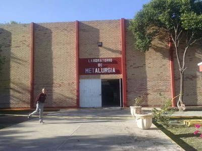

| <-Click aquí para volver |
El laboratorio de metalurgia del tecnologico de Saltillo se encarga de llevar a acabo distintas practicas relacionadas con la carrera de ingeniero en metalurgia , eso es posoble gracias a diversas maquinas que se encuantran dentro de las instalaciones del dicho laboratorio. Cuenta con un area de hornos donde se encargan de fundir todos los metales que utiliazan para sus proyectos area de soldadura donde se encargan de soldar las distintas piezas que fabrican y muchas otras areas donde se especializan en dar forma a diversos proyectos para que los alumnos tengan una experiencia de lo mas cercana a la realidad
